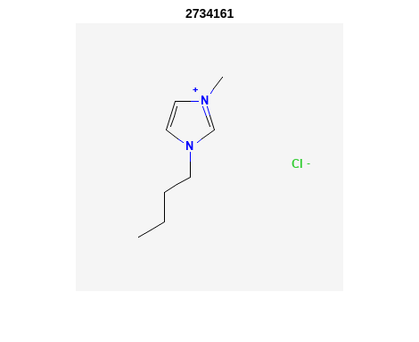
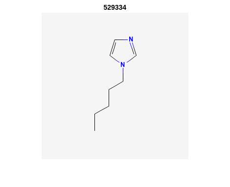
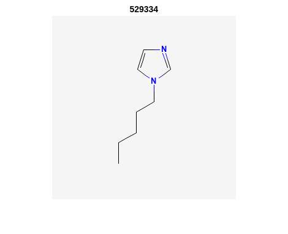

…in Matlab
Contents
…in Matlab#
PubChem API in Matlab#
by Vincent Scalfani and Anastasia Ramig
These recipe examples were tested on November 23, 2022 using Matlab R2022b.
PubChem API Documentation: https://pubchemdocs.ncbi.nlm.nih.gov/programmatic-access
Attribution: This tutorial was adapted from supporting information in:
Scalfani, V. F.; Ralph, S. C. Alshaikh, A. A.; Bara, J. E. Programmatic Compilation of Chemical Data and Literature From PubChem Using Matlab. Chemical Engineering Education, 2020, 54, 230. https://doi.org/10.18260/2-1-370.660-115508 and https://github.com/vfscalfani/MATLAB-cheminformatics)
1. Setup#
Define the PubChem PUG-REST API base URL:
%% set API URL
api = 'https://pubchem.ncbi.nlm.nih.gov/rest/pug/compound/';
%% set MATLAB web options to a 30 second timeout
options = weboptions('Timeout', 30);
2. PubChem Similarity#
Get Compound Image#
We can search for a compound and display an image, for example: 1-Butyl-3-methyl-imidazolium; CID = 2734162.
%% Retrieve and display PNG Image of 1-Butyl-3-methyl-imidazolium; CID = 2734162
CID_SS_query = '2734162';
CID_url = [api 'cid/' CID_SS_query '/PNG'];
[CID_img,map] = imread(CID_url);
imshow(CID_img,map)
Output:

Replace the above CID value (CID_SS_query) with a different CID to customize.
Retrieve InChI and SMILES#
%% Retrieve InChI
inchi_url = [api 'cid/' CID_SS_query '/property/inchi/TXT'];
inchi = webread(inchi_url, options);
disp(inchi)
Output:
InChI=1S/C8H15N2/c1-3-4-5-10-7-6-9(2)8-10/h6-8H,3-5H2,1-2H3/q+1
%% Retrieve Isomeric SMILES
IS_url = [api 'cid/' CID_SS_query '/property/IsomericSMILES/TXT'];
IS = webread(IS_url, options);
disp(IS)
Output:
CCCCN1C=C[N+](=C1)C
Perform a Similarity Search#
We can use the PubChem API to perform a Fingerprint Tanimoto Similarity Search (SS).
(2D Tanimoto threshold 95% to 1-Butyl-3-methyl-imidazolium; CID = 2734162)
%% Search for chemical structures by Similarity Search (SS),
%% (2D Tanimoto threshold 95% to 1-Butyl-3-methyl-imidazolium; CID = 2734162)
api = 'https://pubchem.ncbi.nlm.nih.gov/rest/pug/compound/';
SS_url = [api 'fastsimilarity_2d/cid/' CID_SS_query '/cids/JSON?Threshold=95'];
request = webread(SS_url,options);
SS_CIDs = num2cell(request.IdentifierList.CID);
disp(SS_CIDs(1:10)) %% display first 10
Output:
{[ 2734161]}
{[ 61347]}
{[ 529334]}
{[ 304622]}
{[ 118785]}
{[12971008]}
{[11448496]}
{[11424151]}
{[11171745]}
{[11160028]}
In the above request value, you can adjust to the desired Tanimoto threshold (i.e., 97, 90, etc.). The CID limit of 25 was added as an initial testing safety for time consideration. This limit can be increased.
number_SS_CIDs = length(SS_CIDs)
Output:
number_SS_CIDs = 284
%% set a CID limit to 25 max
if number_SS_CIDs > 25
SS_CIDs = SS_CIDs(1:25);
else
disp('Number of SS_CIDs not changed')
end
Retrieve Identifier and Property Data#
Get the following data for the retrieved CIDs (SS_CIDs): InChI, Isomeric SMILES, MW, Heavy Atom Count, Rotable Bond Count, and Charge.
%% Create an identifier/property dataset from Similarity Search results
%% Retrieve the following data from CID hit results:
%% InChI, Isomeric SMILES, MW, Heavy Atom Count, Rotable Bond Count, and
%% Charge
%% setup a for loop that processes each CID one-by-one
for r = 1:length(SS_CIDs)
CID = SS_CIDs{r};
%% define api calls
api = 'https://pubchem.ncbi.nlm.nih.gov/rest/pug/compound/';
CID_InChI_url = [api 'cid/' num2str(CID) '/property/InChI/TXT'];
CID_IsoSMI_url = [api 'cid/' num2str(CID) '/property/IsomericSMILES/TXT'];
CID_MW_url = [api 'cid/' num2str(CID) '/property/MolecularWeight/TXT'];
CID_HeavyAtomCount_url = [api 'cid/' num2str(CID) '/property/HeavyAtomCount/TXT'];
CID_RotatableBondCount_url = [api 'cid/' num2str(CID) '/property/RotatableBondCount/TXT'];
CID_Charge_url = [api 'cid/' num2str(CID) '/property/Charge/TXT'];
%% CID_TPSA_url = [api 'cid/' num2str(CID) '/property/TPSA/TXT'];
%% retrieve identifer and property data
try
CID_InChI = webread(CID_InChI_url,options);
catch ME
CID_InChI = 'not found'
end
% be polite to PubChem server
n = 0.5;
pause(n)
try
CID_IsoSMI = webread(CID_IsoSMI_url,options);
catch ME
CID_IsoSMI = 'not found'
end
n = 0.5;
pause(n)
try
CID_MW = webread(CID_MW_url,options);
catch ME
CID_MW = 'not found'
end
n = 0.5;
pause(n)
try
CID_HeavyAtomCount = webread(CID_HeavyAtomCount_url,options);
catch ME
CID_HeavyAtomCount = 'not found'
end
n = 0.5;
pause(n)
try
CID_RotatableBondCount = webread(CID_RotatableBondCount_url,options);
catch ME
CID_RotatableBondCount = 'not found'
end
n = 0.5;
pause(n)
try
CID_Charge = webread(CID_Charge_url,options);
catch ME
CID_Charge = 'not found'
end
n = 0.5;
pause(n)
%% add property data to SS_CIDs data array
%% column numbers indicate where the data will be stored.
%% For example, the MW will be placed in column 4. r increases
%% by 1 on each iteration, so the first CID_MW value gets stored in
%% {1,4}, the second in {2,4}, the third in {3,4}, etc.
SS_CIDs{r,2} = CID_InChI;
SS_CIDs{r,3} = CID_IsoSMI;
SS_CIDs{r,4} = CID_MW;
SS_CIDs{r,5} = CID_HeavyAtomCount;
SS_CIDs{r,6} = CID_RotatableBondCount;
SS_CIDs{r,7} = CID_Charge;
%% to add more data, simply index into the next column
%% SS_CIDs{r,8} = CID_TPSA;
end
Compile Data into a Table#
We can display the data as a table:
%% convert cell array to string and remove leading and trailing white space
SS_CIDs_string = strtrim(string(SS_CIDs));
%% convert to table
SSq_table = array2table(SS_CIDs_string, 'VariableNames',{'CID', 'InChI','IsoSMI','MW',...
'HeavyAtomCount','RotatableBondCount','Charge'});
%% rearrange table
SSq_table2 = SSq_table(:, {'IsoSMI' 'CID' 'InChI' 'MW' 'HeavyAtomCount' 'RotatableBondCount' 'Charge'});
disp(SSq_table2(1:10,:)) %% display first 10
Output:
IsoSMI CID InChI MW HeavyAtomCount RotatableBondCount Charge
___________________________________ __________ ____________________________________________________________________________________ ________ ______________ __________________ ______
"CCCCN1C=C[N+](=C1)C.[Cl-]" "2734161" "InChI=1S/C8H15N2.ClH/c1-3-4-5-10-7-6-9(2)8-10;/h6-8H,3-5H2,1-2H3;1H/q+1;/p-1" "174.67" "11" "3" "0"
"CCCCN1C=CN=C1" "61347" "InChI=1S/C7H12N2/c1-2-3-5-9-6-4-8-7-9/h4,6-7H,2-3,5H2,1H3" "124.18" "9" "3" "0"
"CCCCCN1C=CN=C1" "529334" "InChI=1S/C8H14N2/c1-2-3-4-6-10-7-5-9-8-10/h5,7-8H,2-4,6H2,1H3" "138.21" "10" "4" "0"
"CCCCN1C=CN=C1C" "304622" "InChI=1S/C8H14N2/c1-3-4-6-10-7-5-9-8(10)2/h5,7H,3-4,6H2,1-2H3" "138.21" "10" "3" "0"
"CCCN1C=CN=C1" "118785" "InChI=1S/C6H10N2/c1-2-4-8-5-3-7-6-8/h3,5-6H,2,4H2,1H3" "110.16" "8" "2" "0"
"CCCN1C=C[N+](=C1)C.[I-]" "12971008" "InChI=1S/C7H13N2.HI/c1-3-4-9-6-5-8(2)7-9;/h5-7H,3-4H2,1-2H3;1H/q+1;/p-1" "252.10" "10" "2" "0"
"CCCCN1C=C[N+](=C1)C.[I-]" "11448496" "InChI=1S/C8H15N2.HI/c1-3-4-5-10-7-6-9(2)8-10;/h6-8H,3-5H2,1-2H3;1H/q+1;/p-1" "266.12" "11" "3" "0"
"CCCCN1C=C[N+](=C1)C.C(#N)[S-]" "11424151" "InChI=1S/C8H15N2.CHNS/c1-3-4-5-10-7-6-9(2)8-10;2-1-3/h6-8H,3-5H2,1-2H3;3H/q+1;/p-1" "197.30" "13" "3" "0"
"CCCCN1C=C[N+](=C1)C.C(=[N-])=NC#N" "11171745" "InChI=1S/C8H15N2.C2N3/c1-3-4-5-10-7-6-9(2)8-10;3-1-5-2-4/h6-8H,3-5H2,1-2H3;/q+1;-1" "205.26" "15" "3" "0"
"CCCN1C=C[N+](=C1)C.[Br-]" "11160028" "InChI=1S/C7H13N2.BrH/c1-3-4-9-6-5-8(2)7-9;/h5-7H,3-4H2,1-2H3;1H/q+1;/p-1" "205.10" "10" "2" "0
Retrieve Images of CID Compounds from Similarity Search#
%% loop through hit CIDs and show images
for r = 1:length(SS_CIDs(1:3)) %% demo for first 3
CID = SS_CIDs{r};
api = 'https://pubchem.ncbi.nlm.nih.gov/rest/pug/compound/';
CID_url = [api 'cid/' num2str(CID) '/PNG'];
try
%% retrieve CID PNG image and display
[CID_img,map] = imread(CID_url);
figure;
imshow(CID_img,map)
drawnow;
title(num2str(CID));
%% be polite to PubChem server
n = 0.5;
pause(n);
catch
disp('CID image not found')
disp('Execution will continue')
end
end
Output:
 

3. PubChem SMARTS Search#
Search for chemical structures from a SMARTS substructure query.
Define SMARTS Query#
View pattern syntax at: https://smartsview.zbh.uni-hamburg.de/. Note: These are vinyl imidazolium substructure searches.
SMARTSq = {'[CR0H2][n+]1[cH1][cH1]n([CR0H1]=[CR0H2])[cH1]1',...
'[CR0H2][n+]1[cH1][cH1]n([CR0H2][CR0H1]=[CR0H2])[cH1]1',...
'[CR0H2][n+]1[cH1][cH1]n([CR0H2][CR0H2][CR0H1]=[CR0H2])[cH1]1'};
Add your own SMARTS queries to customize. You can add as many as desired within a list.
Perform a SMARTS query search#
% generate URLs for SMARTS query searches
for h = 1:length(SMARTSq)
SMARTSq_url{h} = [api 'fastsubstructure/smarts/' char(SMARTSq(h)) '/cids/JSON'];
end
% perform substructure searches for each query link in SMARTSq_url
for i = 1:length(SMARTSq_url)
try
hit_CIDs{i} = webread(char(SMARTSq_url(i)),options);
% be nice to PubChem Server, add a 1 second pause
n = 1;
pause(n)
catch ME
disp('not found')
end
end
% Transfer JSON data to a cell array with all CIDs
% may need to adjust concatenation below depending on # of SMARTS queries
hit_CIDsALL = [hit_CIDs{1,1}.IdentifierList.CID; hit_CIDs{1,2}.IdentifierList.CID;...
hit_CIDs{1,3}.IdentifierList.CID];
hit_CIDsALL = num2cell(hit_CIDsALL);
disp(hit_CIDsALL(1:10)) %% show first 10
Output:
{[121235111]}
{[132274871]}
{[ 86657882]}
{[ 46178576]}
{[139254006]}
{[129853306]}
{[129853221]}
{[129850195]}
{[ 87560886]}
{[ 87559770]}
number_hit_CIDsALL = length(hit_CIDsALL)
Output:
number_hit_CIDsALL = 845
%% set a CID limit to 25 max
if number_hit_CIDsALL > 25
hit_CIDsALL = hit_CIDsALL(1:25);
else
disp('Number of CIDs not changed')
end
Retrieve Identifier and Property Data#
%% Create an identifier/property dataset from the SMARTS substructure search results
%% Retrieve the following data for each CID:
%% InChI, Canonical SMILES, MW, IUPAC Name, Heavy Atom Count, Covalent Unit Count, Charge
%% setup a for loop that processes each CID one-by-one
for r = 1:length(hit_CIDsALL)
CID = hit_CIDsALL{r};
%% define api calls
api = 'https://pubchem.ncbi.nlm.nih.gov/rest/pug/compound/';
CID_InChI_url = [api 'cid/' num2str(CID) '/property/InChI/TXT'];
CID_CanSMI_url = [api 'cid/' num2str(CID) '/property/CanonicalSMILES/TXT'];
CID_MW_url = [api 'cid/' num2str(CID) '/property/MolecularWeight/TXT'];
CID_IUPACName_url = [api 'cid/' num2str(CID) '/property/IUPACName/TXT'];
CID_HeavyAtomCount_url = [api 'cid/' num2str(CID) '/property/HeavyAtomCount/TXT'];
CID_CovalentUnitCount_url = [api 'cid/' num2str(CID) '/property/CovalentUnitCount/TXT'];
CID_Charge_url = [api 'cid/' num2str(CID) '/property/Charge/TXT'];
%% CID_TPSA_url = [api 'cid/' num2str(CID) '/property/TPSA/TXT'];
%% retrieve identifer and property data
try
CID_InChI = webread(CID_InChI_url,options);
catch ME
CID_InChI = 'not found'
end
%% be polite to PubChem server
n = 0.5;
pause(n)
try
CID_CanSMI = webread(CID_CanSMI_url,options);
catch ME
CID_CanSMI = 'not found'
end
n = 0.5;
pause(n)
try
CID_MW = webread(CID_MW_url,options);
catch ME
CID_MW = 'not found'
end
n = 0.5;
pause(n)
try
CID_IUPACName = webread(CID_IUPACName_url,options);
catch ME
CID_IUPACName = 'not found'
end
n = 0.5;
pause(n)
try
CID_HeavyAtomCount = webread(CID_HeavyAtomCount_url,options);
catch ME
CID_HeavyAtomCount = 'not found'
end
n = 0.5;
pause(n)
try
CID_CovalentUnitCount = webread(CID_CovalentUnitCount_url,options);
catch ME
CID_CovalentUnitCount = 'not found'
end
n = 0.5;
pause(n)
try
CID_Charge = webread(CID_Charge_url,options);
catch ME
CID_Charge = 'not found'
end
n = 0.5;
pause(n)
%% add property data to hit_CIDsALL data array
%% column numbers indicate where the data will be stored.
%% For example, the MW will be placed in column 4. r increases
%% by 1 on each iteration, so the first CID_MW value gets stored in
%% {1,4}, the second in {2,4}, the third in {3,4}, etc.
hit_CIDsALL{r,2} = CID_InChI;
hit_CIDsALL{r,3} = CID_CanSMI;
hit_CIDsALL{r,4} = CID_MW;
hit_CIDsALL{r,5} = CID_IUPACName;
hit_CIDsALL{r,6} = CID_HeavyAtomCount;
hit_CIDsALL{r,7} = CID_CovalentUnitCount;
hit_CIDsALL{r,8} = CID_Charge;
%% to add more data, simply index into the next column
%% hit_CIDsALL{r,9} = CID_TPSA;
end
Compile Data into a Table#
%% convert cell array to string and remove leading and trailing white space
hit_CIDsALLstring = strtrim(string(hit_CIDsALL));
%% convert to table
SMARTSq_table = array2table(hit_CIDsALLstring, 'VariableNames',{'CID', 'InChI','CanSMI','MW',...
'IUPACName','HeavyAtomCount','CovalentUnitCount', 'Charge'});
%% rearrange table
SMARTSq_table2 = SMARTSq_table(:, {'CanSMI' 'IUPACName' 'CID' 'InChI' 'MW',...
'HeavyAtomCount' 'CovalentUnitCount' 'Charge'});
disp(SMARTSq_table2(1:10,:))
Output:
CanSMI IUPACName CID InChI MW HeavyAtomCount CovalentUnitCount Charge
__________________________________________________________________________________________________________________________ _______________________________________________________________________________________________________ ___________ __________________________________________________________________________________________________________________________________________________________________ ________ ______________ _________________ ______
"CC[N+]1=CN(C=C1)C=C.C(F)(F)(F)S(=O)(=O)[N-]S(=O)(=O)C(F)(F)F" "bis(trifluoromethylsulfonyl)azanide;1-ethenyl-3-ethylimidazol-3-ium" "121235111" "InChI=1S/C7H11N2.C2F6NO4S2/c1-3-8-5-6-9(4-2)7-8;3-1(4,5)14(10,11)9-15(12,13)2(6,7)8/h3,5-7H,1,4H2,2H3;/q+1;-1" "403.3" "24" "2" "0"
"C=CN1C=C[N+](=C1)CCCC[N+]2=CN(C=C2)C=C.C(F)(F)(F)S(=O)(=O)[N-]S(=O)(=O)C(F)(F)F.C(F)(F)(F)S(=O)(=O)[N-]S(=O)(=O)C(F)(F)F" "bis(trifluoromethylsulfonyl)azanide;1-ethenyl-3-[4-(3-ethenylimidazol-1-ium-1-yl)butyl]imidazol-3-ium" "132274871" "InChI=1S/C14H20N4.2C2F6NO4S2/c1-3-15-9-11-17(13-15)7-5-6-8-18-12-10-16(4-2)14-18;2*3-1(4,5)14(10,11)9-15(12,13)2(6,7)8/h3-4,9-14H,1-2,5-8H2;;/q+2;2*-1" "804.6" "48" "3" "0"
"CCCCCCCC[N+]1=CN(C=C1)C=C.[Br-]" "1-ethenyl-3-octylimidazol-3-ium;bromide" "86657882" "InChI=1S/C13H23N2.BrH/c1-3-5-6-7-8-9-10-15-12-11-14(4-2)13-15;/h4,11-13H,2-3,5-10H2,1H3;1H/q+1;/p-1" "287.24" "16" "2" "0"
"CCCCCCCCCCCCCCCC[N+]1=CN(C=C1)C=C.[Br-]" "1-ethenyl-3-hexadecylimidazol-3-ium;bromide" "46178576" "InChI=1S/C21H39N2.BrH/c1-3-5-6-7-8-9-10-11-12-13-14-15-16-17-18-23-20-19-22(4-2)21-23;/h4,19-21H,2-3,5-18H2,1H3;1H/q+1;/p-1" "399.5" "24" "2" "0"
"CCCC[N+]1=CN(C=C1)C=C.[I-]" "1-butyl-3-ethenylimidazol-1-ium;iodide" "139254006" "InChI=1S/C9H15N2.HI/c1-3-5-6-11-8-7-10(4-2)9-11;/h4,7-9H,2-3,5-6H2,1H3;1H/q+1;/p-1" "278.13" "12" "2" "0"
"CCCCCCCC[N+]1=CN(C=C1)C=C.C(F)(F)(F)S(=O)(=O)[N-]S(=O)(=O)C(F)(F)F" "bis(trifluoromethylsulfonyl)azanide;1-ethenyl-3-octylimidazol-3-ium" "129853306" "InChI=1S/C13H23N2.C2F6NO4S2/c1-3-5-6-7-8-9-10-15-12-11-14(4-2)13-15;3-1(4,5)14(10,11)9-15(12,13)2(6,7)8/h4,11-13H,2-3,5-10H2,1H3;/q+1;-1" "487.5" "30" "2" "0"
"CCCCCC[N+]1=CN(C=C1)C=C.C(F)(F)(F)S(=O)(=O)[N-]S(=O)(=O)C(F)(F)F" "bis(trifluoromethylsulfonyl)azanide;1-ethenyl-3-hexylimidazol-3-ium" "129853221" "InChI=1S/C11H19N2.C2F6NO4S2/c1-3-5-6-7-8-13-10-9-12(4-2)11-13;3-1(4,5)14(10,11)9-15(12,13)2(6,7)8/h4,9-11H,2-3,5-8H2,1H3;/q+1;-1" "459.4" "28" "2" "0"
"CCCCCCCCCCCCCCCC[N+]1=CN(C=C1)C=C.C(F)(F)(F)S(=O)(=O)[N-]S(=O)(=O)C(F)(F)F" "bis(trifluoromethylsulfonyl)azanide;1-ethenyl-3-hexadecylimidazol-3-ium" "129850195" "InChI=1S/C21H39N2.C2F6NO4S2/c1-3-5-6-7-8-9-10-11-12-13-14-15-16-17-18-23-20-19-22(4-2)21-23;3-1(4,5)14(10,11)9-15(12,13)2(6,7)8/h4,19-21H,2-3,5-18H2,1H3;/q+1;-1" "599.7" "38" "2" "0"
"CCCC[N+]1=CN(C=C1)C=C.[Br-]" "1-butyl-3-ethenylimidazol-1-ium;bromide" "87560886" "InChI=1S/C9H15N2.BrH/c1-3-5-6-11-8-7-10(4-2)9-11;/h4,7-9H,2-3,5-6H2,1H3;1H/q+1;/p-1" "231.13" "12" "2" "0"
"CCCC[N+]1=CN(C=C1)C=C.[Cl-]" "1-butyl-3-ethenylimidazol-1-ium;chloride" "87559770" "InChI=1S/C9H15N2.ClH/c1-3-5-6-11-8-7-10(4-2)9-11;/h4,7-9H,2-3,5-6H2,1H3;1H/q+1;/p-1" "186.68" "12" "2" "0"
Retrieve Images of CID Compounds from SMARTS Search#
%% loop through CIDs and show images
for r = 1:length(hit_CIDsALL(1:3)) %% demo for furst 3
CID = hit_CIDsALL{r};
api = 'https://pubchem.ncbi.nlm.nih.gov/rest/pug/compound/';
CID_url = [api 'cid/' num2str(CID) '/PNG'];
try
%% retrieve CID PNG image and display
[CID_img,map] = imread(CID_url);
figure;
imshow(CID_img,map)
drawnow;
title(num2str(CID));
%% be polite to PubChem server
n = 0.5;
pause(n);
catch
disp('CID image not found')
disp('Execution will continue')
end
end
Output: